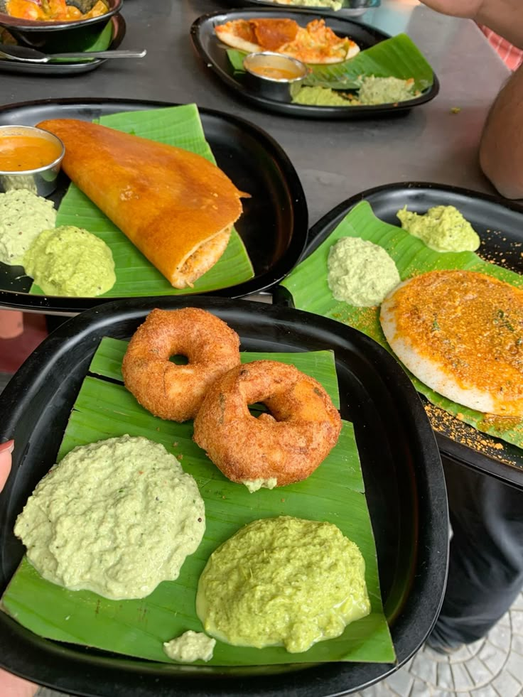
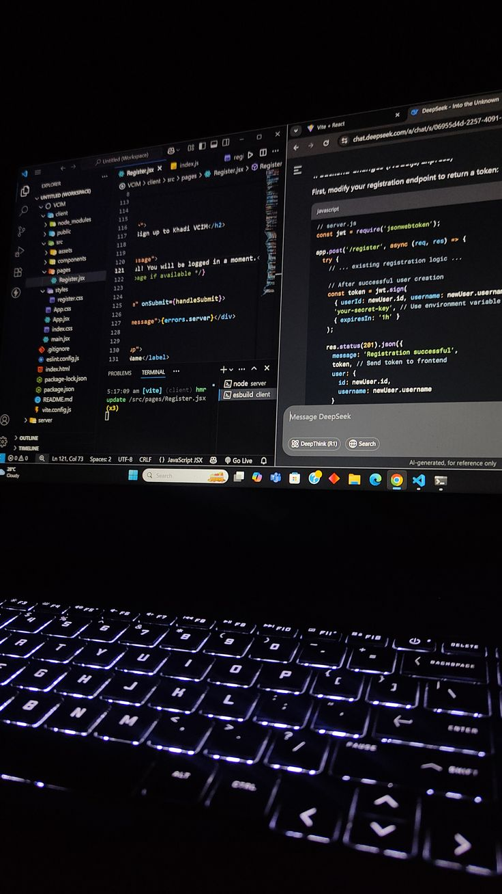
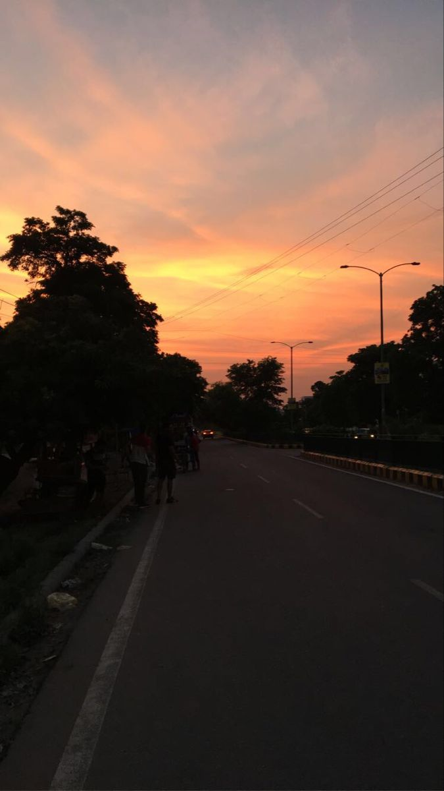
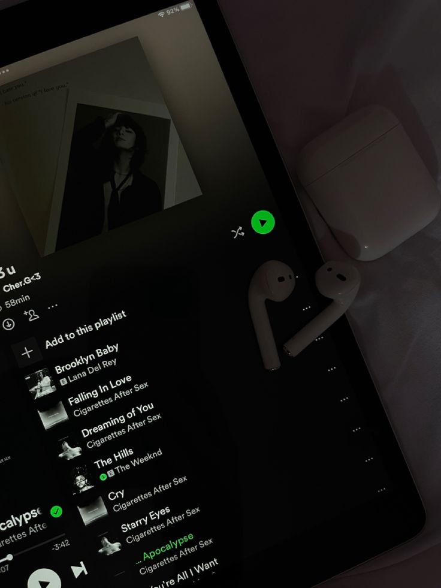
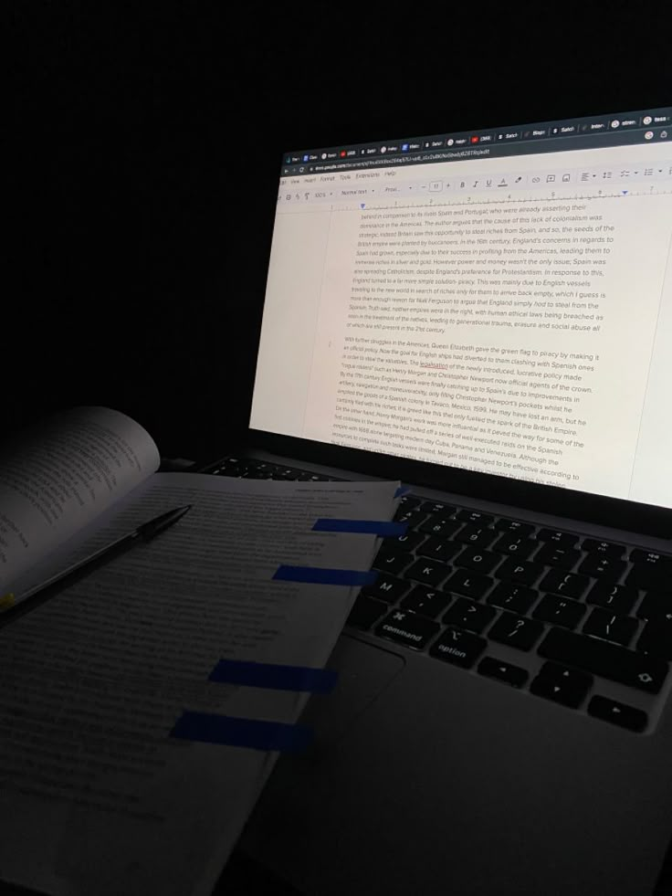

How I Spend Most Of My Mornings:
I start my day waking up at 7.30 AM wishing i could sleep for "5 minutes extra".

I go to college to attendend lectures for the day.

Next up I have a gigantic amount of 'Brunch' before heading back to classes and fight for my life not to fall asleep.

My Afternoons look like:
In the free time i get during the day, I explore one of my very new interests even further, ✨CODING✨

Or sometimes, giving one of my oldest hobbies an appointment! ✨READING NOVELS✨

After coming back from the college, I watch some of my favourite movies or shows for some time. Just a little girl afterall!

Ending My Sunday With (*crying*):
As the sun starts to set, i go out for a nice and cozy evening walk to admire the pretty sky (Also to get evening snacks as dinner).

I take out my notes and study material to keep to updated on the lectures.

At last I put on my favourite songs depending on the mood i am to feel the sense of enjoyment.

I review any pending submissions or assignments and drift into sweet slumber right after getting over with it.
